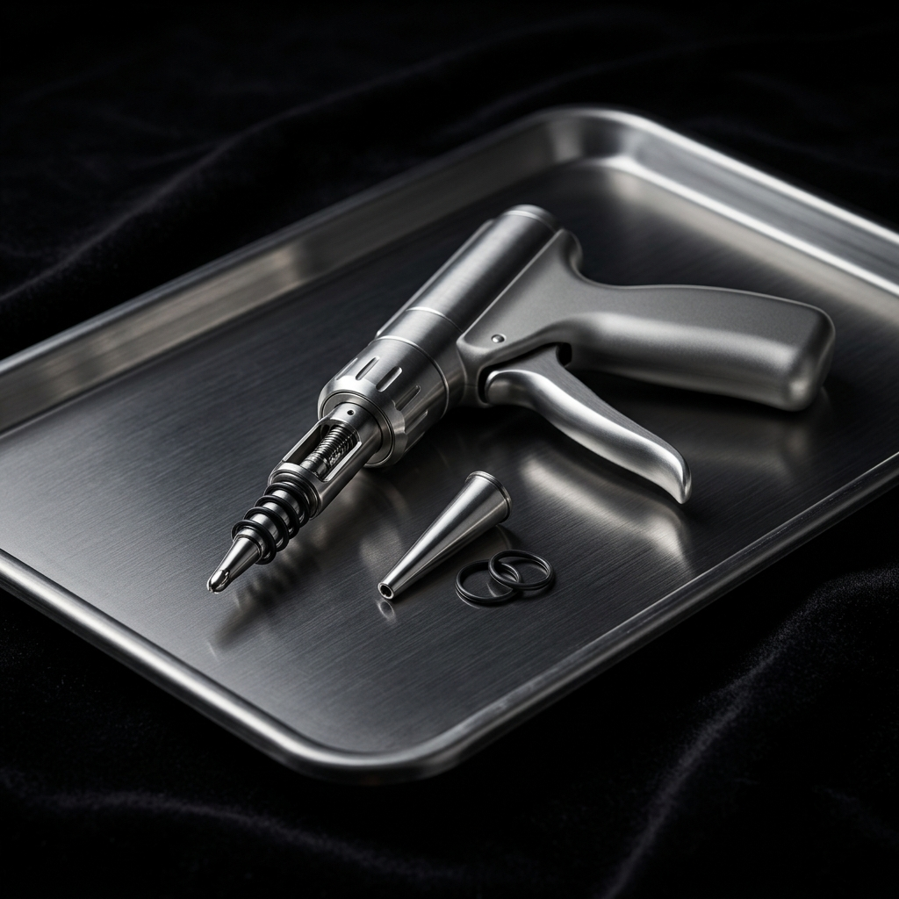
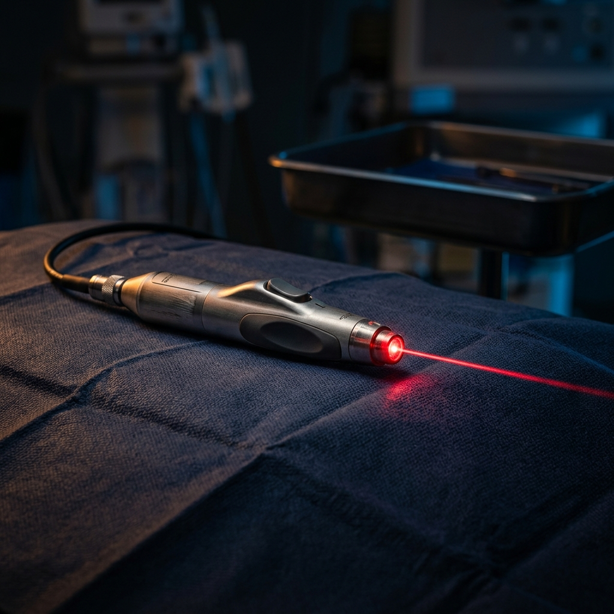
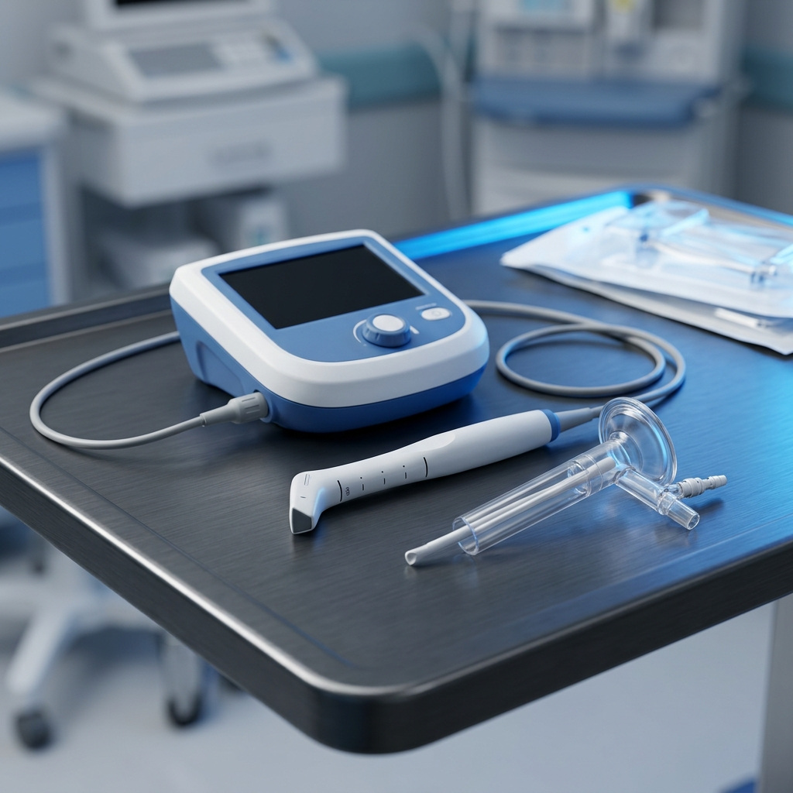
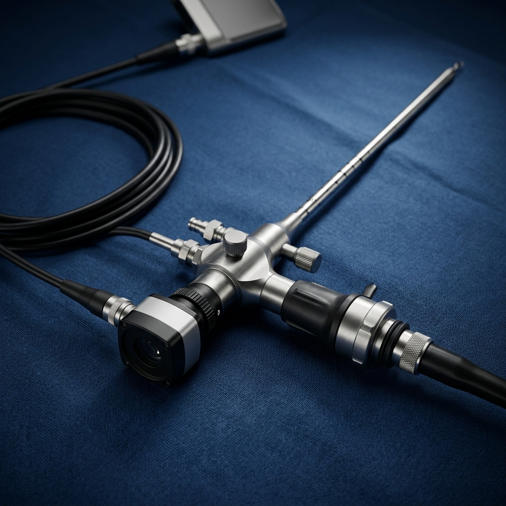
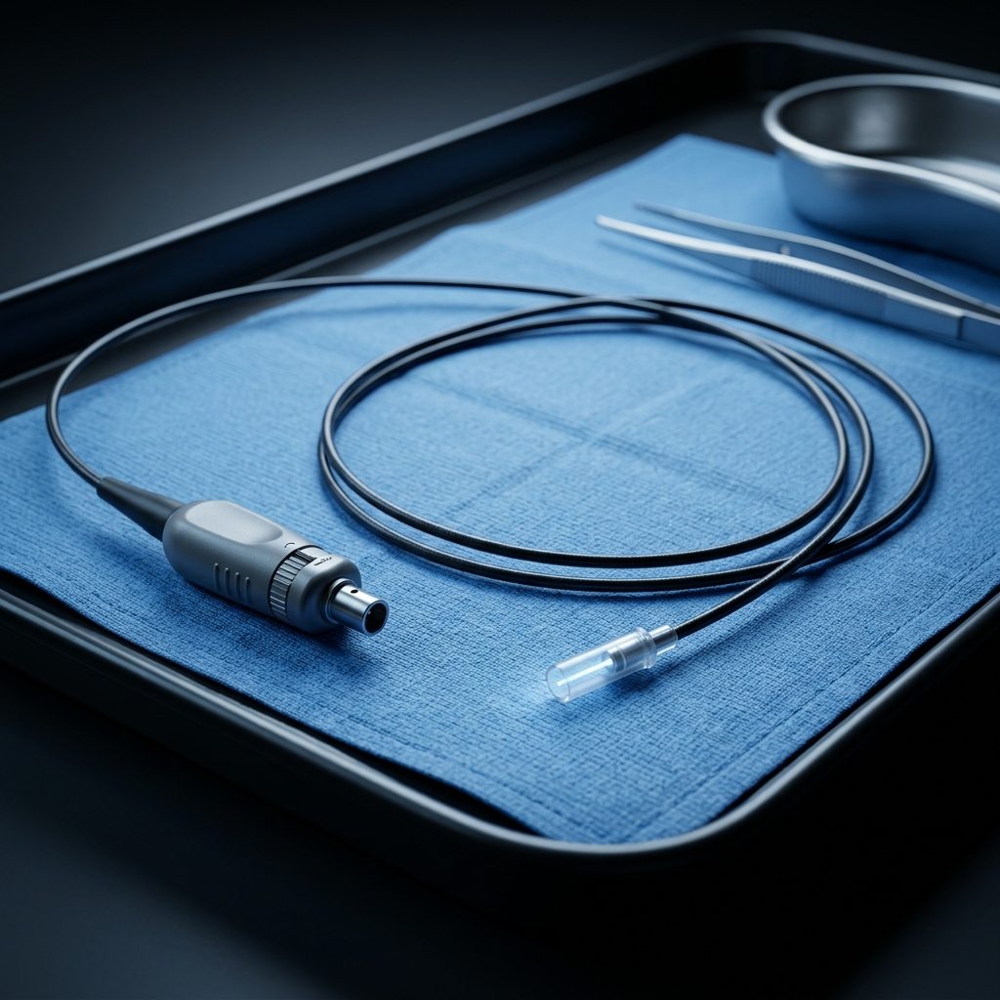
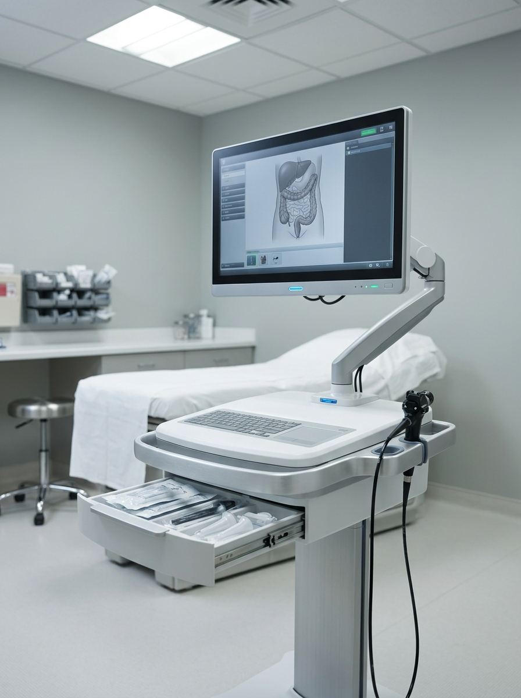

dr. muñiz
Ligadura con banda elástica

Consulta privada, diagnóstico claro y los tratamientos mínimamente invasivos más actuales para hemorroides, fístulas, abscesos y padecimientos del colon y recto.
Una consulta privada, con diagnóstico claro desde el primer día y un plan quirúrgico diseñado a la anatomía y estilo de vida del paciente.
Cuidado quirúrgico y manejo médico
para la salud del ano y recto.






El conocimiento cambia vidas. Nuestra biblioteca explica, en lenguaje claro, lo que puede esperar antes, durante y después del tratamiento — sin tecnicismos innecesarios, sin crudeza.
Ligadura, láser de diodo, thd doppler y hemorroidectomía con energía avanzada.
Conocer el padecimiento 02Lift, vaaft, plasma rico en plaquetas y matriz de proteínas — con preservación del esfínter.
Conocer el padecimiento 03Silac (sellado con láser), epsit endoscópico y colgajos para casos complejos.
Conocer el padecimiento 04Drenaje guiado por ultrasonido, colocación de setón y desbridamiento avanzado.
Atención de urgencia 05Láser co₂ y diodo, anoscopia de alta resolución y tratamiento inmunomodulador.
Conocer el padecimiento 06Cirugía laparoscópica y tamis: resección de precisión con mínima agresión.
Conocer el padecimientoFotocoagulación controlada que sella el tejido hemorroidal desde el interior. La misma energía se emplea para silac en pilonidal y para el tratamiento de condilomas.
Desarterialización transanal guiada por doppler. Trata la causa vascular sin extirpar el tejido sensible del canal anal.
Mapeo tridimensional del canal anal y los esfínteres. Fundamental antes de drenar abscesos y planear cirugía de fístulas.
Energía avanzada que sella vasos y corta tejido simultáneamente. Traduce en cirugías más cortas, menos sangrado y menos dolor.
Cámara endoluminal que permite ver el interior de la fístula anal y tratarla bajo visión directa. Un salto de precisión en casos complejos.
Hra — detección de lesiones subclínicas por vph no visibles a simple vista. Cambia radicalmente la certeza diagnóstica.
Realizamos anoscopia desde la primera visita para asegurar un diagnóstico preciso y completo. Es un procedimiento rápido y mínimamente molesto que cambia radicalmente la certeza terapéutica.
Proctólogo y cirujano general. Práctica privada en Ciudad de México con enfoque en procedimientos ambulatorios mínimamente invasivos.

Déjenos sus datos y un asistente del consultorio le contactará en las próximas 24 horas para coordinar día y hora. También puede llamar directamente.